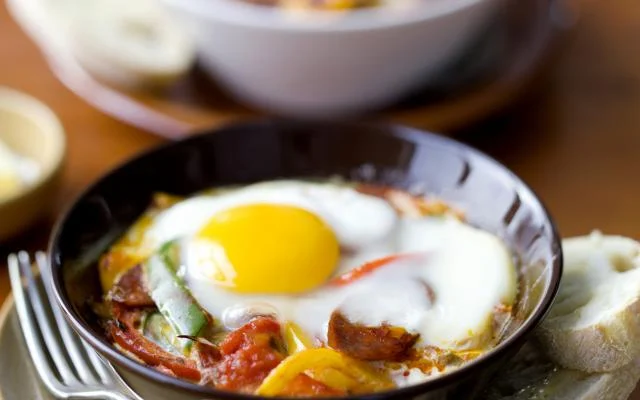

Chorizo met ei

Ingredienten
- 250g chorizoworst
- 4 eieren
- 1 rode paprika
- 1 groene paprika
- 1 gele paprika
- 3 lente-uitjes
- 400g tomatenblokjes (uit blik)
Bereiding
- Snij de chorizo in blokjes, de paprika's in reepjes en de lente-uitjes in ringen.
- Meng de paprika met de tomatenblokjes, de lente-ui en de chorizo. Breng alles op smaak met flink wat peper en eventueel een klein beetje zout.
- Verdeel het mengsel over 4 individuele schaaltjes. Zet ze 3 à 4 minuten in de microgolfoven, op 600 Watt.
- Breek in elk schaaltje 1 ei, prik de dooier door en zet de schaaltjes opnieuw 1 à 2 minuten in de microgolfoven, tot het eiwit gestold is.